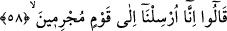

58. Dediler ki: “Biz, suçlu bir topluma (onları helâk etmeye) gönderildik.”
Melekler, “dediler ki: “Biz, suçlu” suçlarında ısrar eden, günahta son raddeye
varmış “bir topluma” -ki, Lût kavmidir- “gönderildik.”
59. “Ancak Lût ailesi hariç. Onların hepsini kurtaracağız.”
“Ancak Lût âilesi hâriç.” Yâni biz, Lût âilesi hâriç, tamamı suçlu olan bir kavme
gönderildik, demektir. Burada Lût (a.s.)’ın âilesinden mü’min olanları kasdetmektedir.
Çünkü, ‘toplum’ ve ‘gönderilme’ lâfızları, suçluları da başkalarını da kapsar. Mânâ şu
şekildedir: “Biz, Lût âilesi hâriç tamamı suç işleyen bir kavme, birincileri helâk edip
ikincileri kurtarmak için gönderildik.”
Âyette âilenin kurtarılacağı ifâde edilmekle yetinilmiştir. Çünkü birer tâbî olan aile
mensupları kurtarıldığı için, tâbî oldukları kişi olan Lût (a.s.) da elbette kurtarılacaktır.
Lût (a.s.)’un şeceresi şöyledir: Târah oğlu Hârân oğlu Lût. Lût (a.s.), Halil İbrâhim
(a.s.)’ın erkek kardeşinin oğludur. İbrâhim (a.s.) ateşten kurtulduktan sonra Lût (a.s.)
ona îmân etti ve onunla birlikte Şam’a hicret etti. İbrâhim (a.s.) ile aynı zamanda sünnet
oldu. Kendisi elli üç, amcası İbrâhim (a.s.) ise seksen yahut yüz yirmi yaşındaydı.
İbrâhim (a.s.) Filistin’e yerleşti. Filistin, aralarında Remle, Gazze, Askalân ve diğer
yerleşim birimlerinin bulunduğu Şam ile Mısır arasındaki bölgedir. Lût da Şam’da
büyükçe bir yerleşim birimi olan Ürdün’de yerleşti. Allah Teâlâ, Lût (a.s.)’ı
Sodomlular’a gönderdi. Buranın ahâlisi, çirkin işler yapıyordu. İşte Allah melekleri,
helâk etmeleri için onlara göndermişti.
“Onların” bu âileye mensup olanların “hepsini” o kavmin başına gelecek olan
azâbdan “kurtaracağız.” Bu azâb, onların şehirlerinin altının üstüne getirilmesidir.
60. “(Fakat Lût’un) karısı müstesna; biz onun geri kalanlardan olmasını takdir
ettik.”
“(Fakat Lût’un) karısı müstesnâ” hâriç. Bu kadının adı, Vâhile’dir. “Biz onun” -
kâfirlerle birlikte helâk olsun diye “geri kalanlardan” onlarla berâber “olmasını